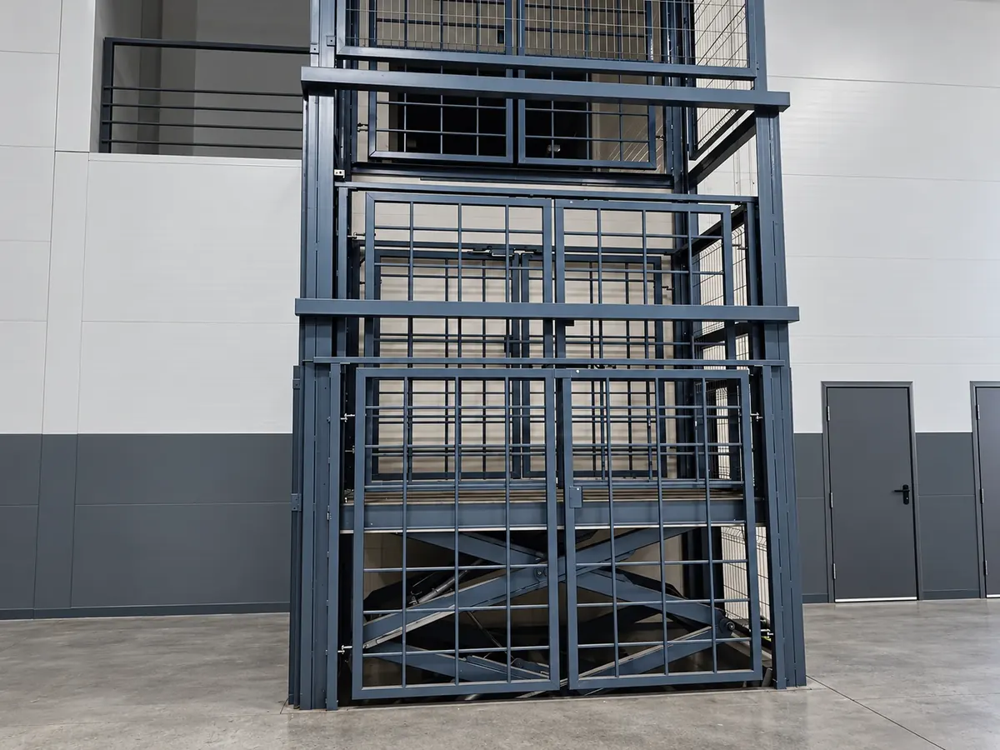

Страница ножничного 2X · вкладка «Описание»
На объектах
Подъёмники 2X у заказчиков: на складах, в цехах, у фасадов.




Как устроено: первое фото крупно с подписью, остальные подписываются при наведении (на телефоне подписи видны сразу), клик открывает фото на весь экран. Последняя плитка ведёт на общую страницу объектов. «40+» — для примера, нужна реальная цифра. Модель на двух новых фото (площадка в приямке и подъёмник в цеху) уточнить, пока поставил их в 2X.
Страница консольного 1L · когда фото меньше
На объектах
Консольные подъёмники у заказчиков.


Фото грузового в каркасной шахте поставил сюда как пример, модель уточнить: 1L, 2L или другое.